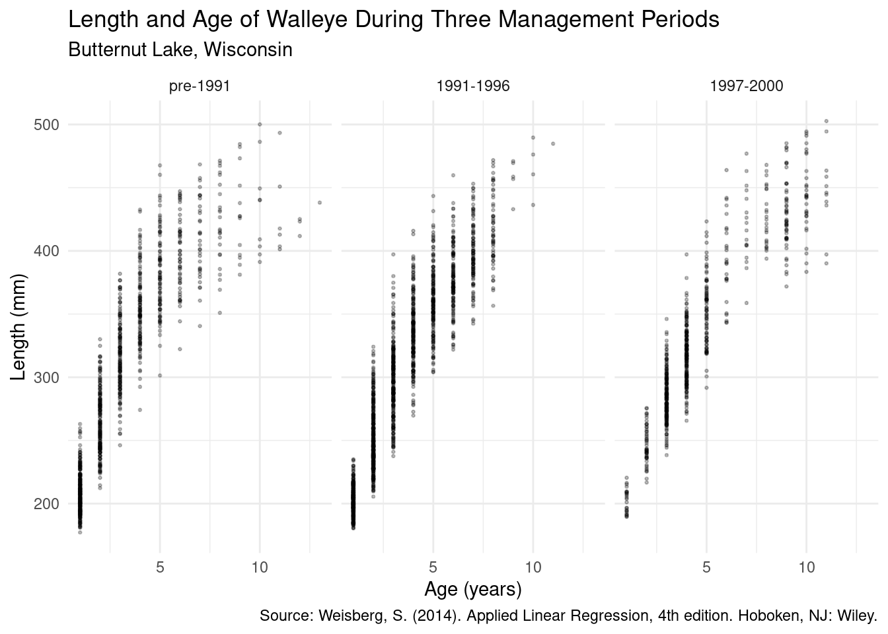
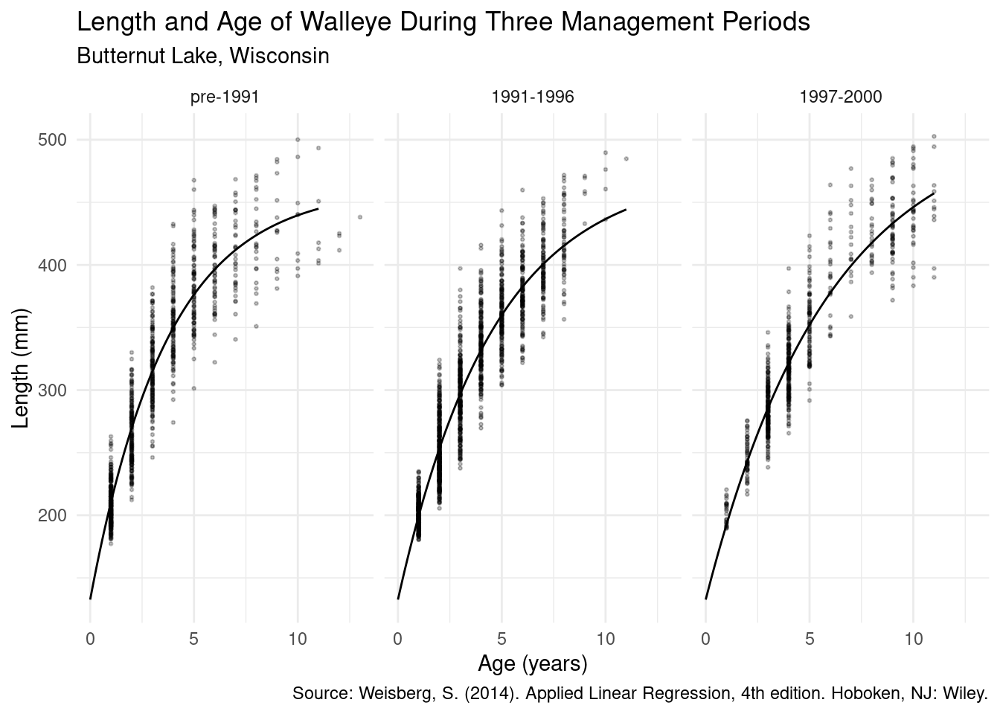
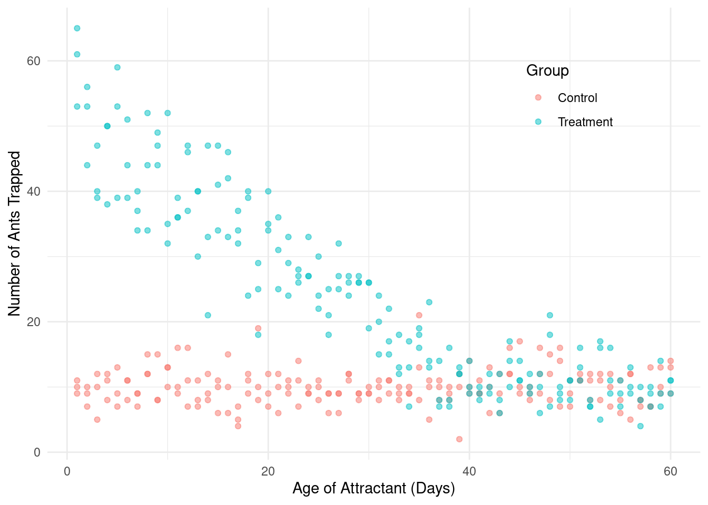
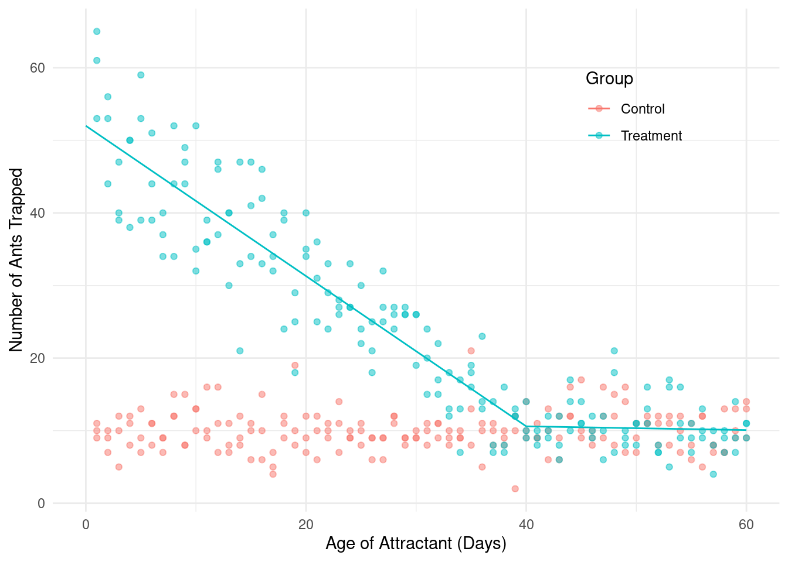
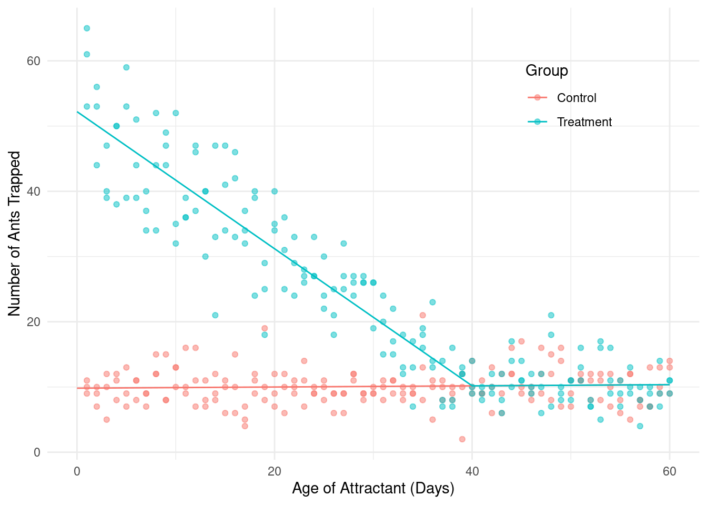
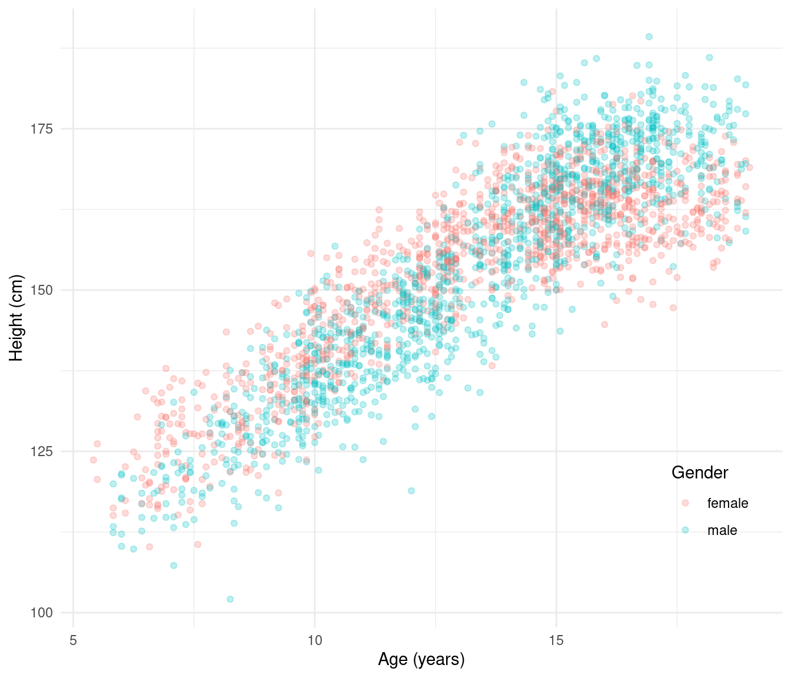
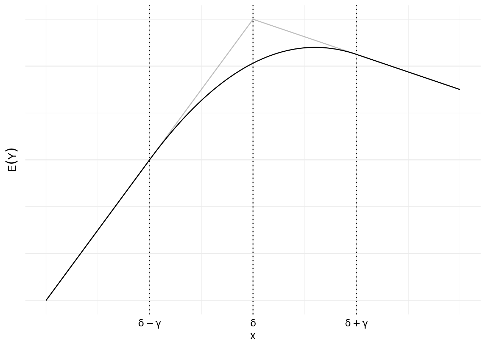
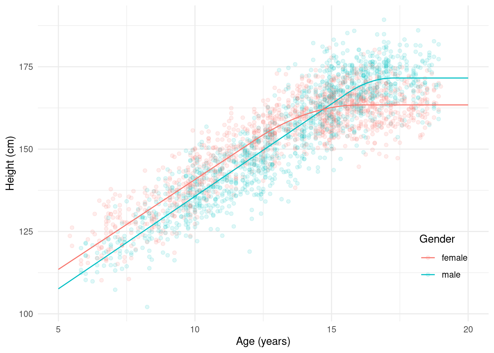

You can also download a PDF copy of this lecture.
Consider the data frame walleye from the package
alr4.
library(alr4)
head(walleye) age length period
1 1 215.3 1
2 1 193.3 1
3 1 202.6 1
4 1 201.5 1
5 1 232.0 1
6 1 191.0 1The period variable refers to three distinct management
periods: pre 1990, 1991-1996, and 1997-2000. It will be useful to
explicitly define that as a categorical variable (i.e., a
factor in R) with descriptive category labels.
walleye$periodf <- factor(walleye$period, levels = c(1,2,3),
labels = c("pre-1991","1991-1996","1997-2000"))
head(walleye) age length period periodf
1 1 215.3 1 pre-1991
2 1 193.3 1 pre-1991
3 1 202.6 1 pre-1991
4 1 201.5 1 pre-1991
5 1 232.0 1 pre-1991
6 1 191.0 1 pre-1991Let’s visualize the data.
p <- ggplot(walleye, aes(y = length, x = age)) + facet_wrap(~ periodf) +
theme_minimal() + geom_point(alpha = 0.25, size = 0.5) +
labs(x = "Age (years)", y = "Length (mm)",
title = "Length and Age of Walleye During Three Management Periods",
subtitle = "Butternut Lake, Wisconsin",
caption = "Source: Weisberg, S. (2014). Applied Linear Regression, 4th edition. Hoboken, NJ: Wiley.")
plot(p) A common nonlinear regression model for these kind of data is the Von Bertalanffy growth model. This model can be written many different ways. One that is similar to the exponential model we used earlier is \[ E(L) = \alpha + (\delta - \alpha)2^{-a/\gamma}, \] where \(L\) and \(a\) are length and age, respectively. The parameters can be interpreted as follows.
Consider first a model in which there are no differences in the function between management periods. The starting values were obtained by “eyeballing” the plot.
m <- nls(length ~ alpha + (delta - alpha) * 2^(-age / gamma),
data = walleye, start = list(alpha = 500, delta = 200, gamma = 5))
cbind(summary(m)$coefficients, confint(m)) Estimate Std. Error t value Pr(>|t|) 2.5% 97.5%
alpha 487.724 4.7688 102.27 0.00e+00 478.878 497.394
delta 140.729 2.0780 67.72 0.00e+00 136.654 144.732
gamma 3.424 0.1021 33.54 1.46e-211 3.236 3.632Now suppose we want to allow the \(\alpha\) and \(\gamma\) parameters to vary over management
periods, but not \(\delta\). The model
we want could be written case-wise as \[
E(L_i) =
\begin{cases}
\alpha_1 + (\delta - \alpha_1)2^{-a_i/\gamma_1}, & \text{if the
$i$-th observation is from the first period}, \\
\alpha_2 + (\delta - \alpha_2)2^{-a_i/\gamma_2}, & \text{if the
$i$-th observation is from the second period}, \\
\alpha_3 + (\delta - \alpha_3)2^{-a_i/\gamma_3}, & \text{if the
$i$-th observation is from the third period}.
\end{cases}
\] Perhaps the easiest way to specify this model is to use the
case_when function from the dplyr
package.
library(dplyr)
m <- nls(length ~ case_when(
periodf == "pre-1991" ~ alpha1 + (delta - alpha1) * 2^(-age / gamma1),
periodf == "1991-1996" ~ alpha2 + (delta - alpha2) * 2^(-age / gamma2),
periodf == "1997-2000" ~ alpha3 + (delta - alpha3) * 2^(-age / gamma3)
), start = list(alpha1 = 500, alpha2 = 500, alpha3 = 500,
delta = 200, gamma1 = 5, gamma2 = 5, gamma3 = 5), data = walleye)
cbind(summary(m)$coefficients, confint(m)) Estimate Std. Error t value Pr(>|t|) 2.5% 97.5%
alpha1 461.912 4.82053 95.82 0.000e+00 453.119 471.429
alpha2 475.839 6.30129 75.51 0.000e+00 464.110 489.135
alpha3 516.907 7.76416 66.58 0.000e+00 502.581 532.897
delta 132.667 2.22347 59.67 0.000e+00 128.307 136.939
gamma1 2.574 0.08383 30.70 1.299e-181 2.423 2.740
gamma2 3.194 0.12046 26.51 3.746e-140 2.971 3.448
gamma3 4.095 0.15206 26.93 4.080e-144 3.817 4.410d <- expand.grid(age = seq(0, 11, length = 100),
periodf = levels(walleye$periodf))
d$yhat <- predict(m, newdata = d)
p <- ggplot(walleye, aes(y = length, x = age)) + facet_wrap(~ periodf) +
theme_minimal() + geom_point(alpha = 0.25, size = 0.5) +
geom_line(aes(y = yhat), data = d) +
labs(x = "Age (years)", y = "Length (mm)",
title = "Length and Age of Walleye During Three Management Periods",
subtitle = "Butternut Lake, Wisconsin",
caption = "Source: Weisberg, S. (2014). Applied Linear Regression, 4th edition. Hoboken, NJ: Wiley.")
plot(p)
Here summary and confint provide inferences
for each parameter in each period, but do not provide inferences about
the differences in the parameters between periods. But
we can use lincon to do this. Suppose we wanted to compare
the second and third periods with the first.
library(trtools) # for lincon
lincon(m, a = c(-1,1,0,0,0,0,0)) # alpha2 - alpha1 estimate se lower upper tvalue df pvalue
(-1,1,0,0,0,0,0),0 13.93 6.758 0.675 27.18 2.061 3191 0.03942lincon(m, a = c(-1,0,1,0,0,0,0)) # alpha3 - alpha1 estimate se lower upper tvalue df pvalue
(-1,0,1,0,0,0,0),0 54.99 8.449 38.43 71.56 6.509 3191 8.75e-11lincon(m, a = c(0,0,0,0,-1,1,0)) # gamma2 - gamma1 estimate se lower upper tvalue df pvalue
(0,0,0,0,-1,1,0),0 0.6199 0.1061 0.4118 0.8281 5.84 3191 5.736e-09lincon(m, a = c(0,0,0,0,-1,0,1)) # gamma3 - gamma1 estimate se lower upper tvalue df pvalue
(0,0,0,0,-1,0,1),0 1.521 0.145 1.237 1.805 10.49 3191 2.372e-25Sometimes it is helpful to write the model as a function to keep the code tidy. We can program the function \[ E(L) = \alpha + (\delta - \alpha)2^{-a/\gamma} \] as follows.
vbf <- function(age, alpha, delta, gamma) {
alpha + (delta - alpha) * 2^(-age / gamma)
}Now we can use vbf in nls.
m <- nls(length ~ case_when(
periodf == "pre-1991" ~ vbf(age, alpha1, delta, gamma1),
periodf == "1991-1996" ~ vbf(age, alpha2, delta, gamma2),
periodf == "1997-2000" ~ vbf(age, alpha3, delta, gamma3)
), start = list(alpha1 = 500, alpha2 = 500, alpha3 = 500,
delta = 200, gamma1 = 5, gamma2 = 5, gamma3 = 5), data = walleye)
cbind(summary(m)$coefficients, confint(m)) Estimate Std. Error t value Pr(>|t|) 2.5% 97.5%
alpha1 461.912 4.82053 95.82 0.000e+00 453.119 471.429
alpha2 475.839 6.30129 75.51 0.000e+00 464.110 489.135
alpha3 516.907 7.76416 66.58 0.000e+00 502.581 532.897
delta 132.667 2.22347 59.67 0.000e+00 128.307 136.939
gamma1 2.574 0.08383 30.70 1.299e-181 2.423 2.740
gamma2 3.194 0.12046 26.51 3.746e-140 2.971 3.448
gamma3 4.095 0.15206 26.93 4.080e-144 3.817 4.410Consider data from a study of the effect of attractant age on attracting fire ants.
library(trtools) # for fireants data
p <- ggplot(fireants, aes(x = day, y = count, color = group)) +
geom_point(alpha = 0.5) + theme_minimal() +
theme(legend.position = c(0.8,0.8)) +
labs(x = "Age of Attractant (Days)", y = "Number of Ants Trapped",
color = "Group")
plot(p) Consider first this model for only the treatment group: \[ E(Y_i) = \beta_0 + \beta_1 x_i + \beta_2 I(x_i < \delta)(x_i - \delta), \] where \(Y_i\) and \(x_i\) are the fire ant count and age of attractant, respectively, and \(I\) is an indicator function defined as \[ I(x_i < \delta) = \begin{cases} 1, & \text{if $x_i < \delta$}, \\ 0, & \text{if $x_i \ge \delta$.} \end{cases} \] In general, an indicator function is a function such that \[ I(\text{statement}) = \begin{cases} 1, & \text{if the statement is true}, \\ 0, & \text{if the statement is false}. \end{cases} \]
Note: Don’t confuse the indicator function
\(I\) with the “inhibit” function
I in R. An indicator function is a
mathematical function that returns a 1 or 0 depending on if its
argument is true or false, respectively. The inhibit function is a R
function that is used to force R to treat something “as is” — usually in
a model formula argument.
Writing the model case-wise for \(x_i < \delta\) versus \(x_i \ge \delta\) we have \[ E(Y_i) = \begin{cases} \beta_0 - \beta_2 \delta + (\beta_1 + \beta_2)x_i, & \text{if $x_i < \delta$,} \\ \beta_0 + \beta_1 x_i, & \text{if $x_i \ge \delta$.} \end{cases} \] This is sometimes called segmented, piece-wise, or broken-stick regression. It is also a special case of a spline. The \(\delta\) is called a “knot” of the spline. If the knot is known then this is a linear model.
treated <- subset(fireants, group == "Treatment")
m <- lm(count ~ day + I((day < 40)*(day - 40)), data = treated)
summary(m)$coefficients Estimate Std. Error t value Pr(>|t|)
(Intercept) 11.62723 3.74415 3.1054 2.213e-03
day -0.02574 0.07898 -0.3259 7.449e-01
I((day < 40) * (day - 40)) -1.00914 0.10389 -9.7138 3.798e-18Note that we can write the indicator function \(I(x_i < 40)\) as
(day < 40) in R.
d <- expand.grid(day = seq(0, 60, length = 100), group = "Treatment")
d$yhat <- predict(m, newdata = d)
p <- p + geom_line(aes(y = yhat), data = d)
plot(p) Now it would be useful to extend the model to include the control group, but subject to a couple of constraints:
The relationship between expected count and age for the control group should not have a break (because there is no attractant to wear off).
After 40 days the relationship between expected count and age should be identical for the control and treatment groups (because the attractant has worn off).
Here’s a model that will accomplish that: \[ E(Y_i) = \beta_0 + \beta_1 x_i + \beta_2 I(x_i < \delta)(x_i - \delta)g_i, \] where \[ g_i = \begin{cases} 1, & \text{if the $i$-th observation is from the treatment group}, \\ 0, & \text{otherwise}, \end{cases} \] so that the model can be written as \[ E(Y_i) = \begin{cases} \beta_0 - \beta_2 \delta + (\beta_1 + \beta_2)x_i, & \text{if the $i$-th observation is from the treatmnt group and $x_i < \delta$}, \\ \beta_0 + \beta_1 x_i, & \text{otherwise}. \end{cases} \]
m <- lm(count ~ day + I((day < 40)*(day - 40)*(group == "Treatment")),
data = fireants)
d <- expand.grid(day = seq(0, 60, length = 100),
group = c("Control","Treatment"))
d$yhat <- predict(m, newdata = d)
p <- ggplot(fireants, aes(x = day, y = count, color = group)) +
geom_point(alpha = 0.5) + theme_minimal() +
theme(legend.position = c(0.8,0.8)) +
labs(x = "Age of Attractant (Days)",
y = "Number of Ants Trapped", color = "Group") +
geom_line(aes(y = yhat), data = d)
plot(p) Now we can make some inferences.
# expected counts at day 0
contrast(m, a = list(group = c("Control","Treatment"), day = 0),
cnames = c("Control","Treatment")) estimate se lower upper tvalue df pvalue
Control 9.819 0.5982 8.642 11.00 16.41 357 1.665e-45
Treatment 52.211 0.6770 50.880 53.54 77.12 357 1.145e-224# expected counts at day 40
contrast(m, a = list(group = c("Control","Treatment"), day = 40),
cnames = c("Control","Treatment")) estimate se lower upper tvalue df pvalue
Control 10.18 0.2573 9.671 10.68 39.56 357 1.523e-132
Treatment 10.18 0.2573 9.671 10.68 39.56 357 1.523e-132# slopes before day 40
contrast(m,
a = list(group = c("Control","Treatment"), day = 1),
b = list(group = c("Control","Treatment"), day = 0),
cnames = c("Control","Treatment")) estimate se lower upper tvalue df pvalue
Control 0.008954 0.01509 -0.02072 0.03863 0.5935 357 5.532e-01
Treatment -1.050865 0.01926 -1.08873 -1.01299 -54.5726 357 2.658e-175# slopes after day 40
contrast(m,
a = list(group = c("Control","Treatment"), day = 41),
b = list(group = c("Control","Treatment"), day = 40),
cnames = c("Control","Treatment")) estimate se lower upper tvalue df pvalue
Control 0.008954 0.01509 -0.02072 0.03863 0.5935 357 0.5532
Treatment 0.008954 0.01509 -0.02072 0.03863 0.5935 357 0.5532# difference in expected counts at day 20
contrast(m,
a = list(group = "Treatment", day = 20),
b = list(group = "Control", day = 20)) estimate se lower upper tvalue df pvalue
21.2 0.4602 20.29 22.1 46.05 357 2.908e-152We could go one step further by assuming that for the control group and after the knot the expected count is constant. This would require us to drop the term \(\beta_1x_i\).
m <- lm(count ~ I((day < 40) * (day - 40) *
(group == "Treatment")), data = fireants)
d <- expand.grid(day = seq(0, 60, length = 100),
group = c("Control","Treatment"))
d$yhat <- predict(m, newdata = d)
p <- ggplot(fireants, aes(x = day, y = count, color = group)) +
geom_point(alpha = 0.5) + theme_minimal() +
theme(legend.position = c(0.8,0.8)) +
labs(x = "Age of Attractant (Days)",
y = "Number of Ants Trapped", color = "Group") +
geom_line(aes(y = yhat), data = d)
plot(p)Now consider the following inferences.
# slopes before day 40
contrast(m,
a = list(group = c("Control","Treatment"), day = 1),
b = list(group = c("Control","Treatment"), day = 0),
cnames = c("Control","Treatment")) estimate se lower upper tvalue df pvalue
Control 0.000 0.0000 0.00 0.000 NaN 358 NaN
Treatment -1.052 0.0191 -1.09 -1.015 -55.08 358 7.001e-177# slopes after day 40
contrast(m,
a = list(group = c("Control","Treatment"), day = 41),
b = list(group = c("Control","Treatment"), day = 40),
cnames = c("Control","Treatment")) # slopes after day 40 estimate se lower upper tvalue df pvalue
Control 0 0 0 0 NaN 358 NaN
Treatment 0 0 0 0 NaN 358 NaNIf the knot \(\delta\) is known then the model is linear. We can write \[ E(Y_i) = \beta_0 + \beta_1 x_i + \beta_2 I(x_i < \delta)(x_i - \delta)g_i \] as \[ E(Y_i) = \beta_0 + \beta_1 x_{i1} + \beta_2 x_{i2}, \] where \(x_{i1} = x_i\) (day) and \(x_{i2} = I(x_i < \delta)(x_i - \delta)g_i\), provided we know \(\delta\). But what if \(\delta\) is unknown and is to be estimated? Then we have a nonlinear model.
Let’s start estimating a linear model with nls
by guessing the value of \(\delta\).
This will give us some good starting values.
m <- nls(count ~ b0 + b1 * day + b2 * (day < 40) * (day - 40) *
(group == "Treatment"), data = fireants,
start = list(b0 = 0, b1 = 1, b2 = 1))
cbind(summary(m)$coefficients, confint(m)) Estimate Std. Error t value Pr(>|t|) 2.5% 97.5%
b0 9.818633 0.59822 16.4131 1.665e-45 8.64216 10.99511
b1 0.008954 0.01509 0.5935 5.532e-01 -0.02072 0.03863
b2 -1.059819 0.02301 -46.0541 2.908e-152 -1.10508 -1.01456Now consider a model where the knot (\(\delta\)) is a parameter, using the estimate from the linear model as starting values.
m <- nls(count ~ b0 + b1 * day + b2 * (day < delta) * (day - delta) *
(group == "Treatment"), data = fireants,
start = list(b0 = 10, b1 = 0, b2 = -1, delta = 40))
cbind(summary(m)$coefficients, confint(m)) Estimate Std. Error t value Pr(>|t|) 2.5% 97.5%
b0 9.807069 0.60056 16.3298 3.885e-45 8.62598 10.98816
b1 0.008604 0.01516 0.5674 5.708e-01 -0.02122 0.03843
b2 -1.052444 0.03597 -29.2590 9.772e-97 -1.12822 -0.98318
delta 40.200079 0.75454 53.2776 1.061e-171 38.60885 41.69578The contrast function does not work with a
nls object, but we can use lincon provided
that the quantity of interest is a linear combination of parameters. For
example, recall that the model can be written as \[
E(Y_i) =
\begin{cases}
\beta_0 - \beta_2 \delta + (\beta_1 + \beta_2)x_i,
& \text{if $x_i < \delta$ and treatment}, \\
\beta_0 + \beta_1 x_i, & \text{otherwise},
\end{cases}
\] so the slope before the knot for the treatment group is \(\beta_1 + \beta_2\). This can be written as
\[
\ell = a_0\beta_0 + a_1\beta_1 + a_2\beta_2 + a_3\delta + b
\] where \(a_0 = 0\), \(a_1 = 1\), \(a_2
= 1\), \(a_3 = 0\), and \(b = 0\).
# slope before knot for treatment group
lincon(m, a = c(0, 1, 1, 0)) estimate se lower upper tvalue df pvalue
(0,1,1,0),0 -1.044 0.03262 -1.108 -0.9797 -32 356 8.718e-107The data frame children in the package
npregfast contains 2500 observations of the age and
height of children.
library(ggplot2)
library(npregfast)
p <- ggplot(children, aes(x = age, y = height, color = sex)) +
geom_point(alpha = 0.25) + theme_minimal() +
labs(x = "Age (years)", y = "Height (cm)", color = "Gender") +
theme(legend.position = c(0.9,0.2))
plot(p) The “bent cable” regression model can be used as kind of crude growth model for these data. It can be viewed as a generalization of the segmented regression model where rather than having two lines meet at a sharp angle, one line gradually transitions into the other by attaching them by what looks like a bent cable. The figure below shows a bent cable model.  The grey lines show a segmented regression model while the solid curve shows a bent cable model. Essentially there are two lines: one line to the left of \(\delta - \gamma\) and one line to the right of \(\delta + \gamma\). And between the two lines (i.e., between \(\delta - \gamma\) and \(\delta + \gamma\)) is a quadratic polynomial that joins the two lines in such a way that the whole piece-wise function is smooth. The parameter \(\delta\) represents the point at which the two lines would meet if there was no bend, and \(\gamma\) is the half of the distance between the points \(\delta - \gamma\) and \(\delta + \gamma\). As \(\gamma\) gets closer to zero this function approaches a segmented regression model (as shown by the grey lines).
The bent cable regression model can be written as \[ E(Y) = \beta_0 + \beta_1 x + \beta_2 q(x, \delta, \gamma), \] where \(q(x, \delta, \gamma)\) is a function defined as \[ q(x, \delta, \gamma) = \frac{(x - \delta + \gamma)^2}{4\gamma} I(\delta - \gamma \le x \le \delta + \gamma) + I(x > \delta + \gamma)(x - \delta). \] This can be written case-wise as \[ E(Y) = \begin{cases} \beta_0 + \beta_1 x, & \text{if $x < \delta - \gamma$}, \\ \beta_0 + \beta_1 x + \beta_2\frac{(x_i - \delta + \gamma)^2}{4\gamma}, & \text{if $\delta - \gamma \le x \le \delta + \gamma$}, \\ \beta_0 - \delta\beta_2 + (\beta_1 + \beta_2) x, & \text{if $x > \delta + \gamma$}. \end{cases} \] So when \(x < \delta - \gamma\) we have a line with intercept \(\beta_0\) and slope \(\beta_1\), and after \(x > \delta + \gamma\) we have another line with intercept \(\beta_0 - \delta\beta_2\) and slope \(\beta_1 + \beta_2\). Between \(\delta - \gamma\) and \(\delta + \gamma\) is what is basically a quadratic regression model. And all three functions are constrained so that they form one smooth and continuous function.
Given the complexity of the function \(q(x,\delta,\gamma)\), it is useful to program it.
q <- function(x, delta, gamma) {
(x - delta + gamma)^2 / (4 * gamma) *
(delta - gamma <= x & x <= delta + gamma) +
(x > (delta + gamma)) * (x - delta)
}First I will estimate a linear model with crude guesses of \(\delta\) and \(\gamma\).
m <- nls(height ~ b0 + b1 * age + b2 * q(age, 15, 1), data = children,
start = list(b0 = 0, b1 = 0, b2 = 0))
summary(m)$coefficients Estimate Std. Error t value Pr(>|t|)
b0 84.886 0.80646 105.26 0.00e+00
b1 5.320 0.06612 80.46 0.00e+00
b2 -4.172 0.21769 -19.16 1.78e-76Next we can use the estimates of \(\beta_0\), \(\beta_1\), and \(\beta_2\) as starting values in a nonlinear model.
m <- nls(height ~ b0 + b1 * age + b2 * q(age, delta, gamma), data = children,
start = list(b0 = 85, b1 = 5.3, b2 = -5, delta = 15, gamma = 1))
summary(m)$coefficients Estimate Std. Error t value Pr(>|t|)
b0 85.898 0.95916 89.555 0.000e+00
b1 5.217 0.08468 61.613 0.000e+00
b2 -5.239 0.68653 -7.631 3.297e-14
delta 15.662 0.27560 56.828 0.000e+00
gamma 1.483 0.51344 2.889 3.897e-03The slope after the bend is \(\beta_1 + \beta_2\), but if \(\beta_2 = -\beta_1\) then the slope after the bend would be zero. This model would then be \[ E(Y) = \beta_0 + \beta_1 x - \beta_1 q(x, \delta, \gamma). \] Let’s consider using this model but now with a separate growth curve for males and females.
m <- nls(height ~ case_when(
sex == "male" ~ b0m + b1m*age - b1m*q(age, deltam, gammam),
sex == "female" ~ b0f + b1f*age - b1f*q(age, deltaf, gammaf)),
data = children, start = list(b0m = 86, b0f = 86, b1m = 5, b1f = 5,
deltam = 15, deltaf = 15, gammam = 1.5, gammaf = 1.5))
summary(m)$coefficients Estimate Std. Error t value Pr(>|t|)
b0m 79.5271 1.04815 75.874 0.000e+00
b0f 86.2213 1.65345 52.146 0.000e+00
b1m 5.6137 0.08511 65.959 0.000e+00
b1f 5.4542 0.16443 33.171 3.665e-200
deltam 16.3983 0.12218 134.209 0.000e+00
deltaf 14.1533 0.14833 95.416 0.000e+00
gammam 0.8673 0.49692 1.745 8.105e-02
gammaf 1.9069 0.43727 4.361 1.348e-05d <- expand.grid(sex = c("male","female"), age = seq(5, 20, length = 200))
d$yhat <- predict(m, newdata = d)
p <- ggplot(children, aes(x = age, y = height, color = sex)) +
geom_point(alpha = 0.125) + theme_minimal() +
geom_line(aes(y = yhat), data = d) +
labs(x = "Age (years)", y = "Height (cm)", color = "Gender") +
theme(legend.position = c(0.9,0.2))
plot(p)